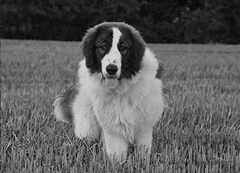

About
Fierce Guardian
Steady Disposition
The Tornjak, a majestic and ancient breed, hails from the rugged and mountainous regions of Bosnia and Herzegovina, as well as Croatia. With origins dating back to the 11th century, Tornjaks were initially bred to protect flocks of sheep from predators in the unforgiving Balkan landscapes. This breed is characterized by its remarkable temperament, known for unwavering loyalty, intelligence, and a gentle disposition. As a guardian breed, the Tornjak is steadfast in protecting its charges, yet it displays a calm and composed demeanor with its family.
In terms of appearance, these large and sturdy dogs boast a well-muscled frame, a thick double coat that offers protection from harsh weather, and a striking presence that exudes strength and resilience. Tornjaks are not only a testament to their rich history but also cherished companions for those who appreciate their unique blend of heritage and temperament.
Tornjak
Temperment
Tornjaks are livestock guardian dogs, or LGDs, and possess temperaments uniquely suited to their vital role as protectors of herds and flocks. These dogs display unwavering loyalty, intelligence, and calm disposition. In the presence of livestock, they display a natural instinct to protect, forming strong bonds with the animals they guard. Tornjaks are known for their independence, self-confidence, and exceptional problem-solving abilities, making them adept at assessing threats and taking appropriate action. Despite their imposing presence, they are typically gentle and patient, particularly with those they deem under their care. However, they can be wary of strangers, making them effective guardians against potential threats. The tornjak's temperament, with its combination of vigilance, courage, and an underlying gentleness, is a testament to their remarkable suitability for the essential role of safeguarding their domain.

unwavering loyalty
Average
Height
23 - 28 in
Average
Weight
60 - 120 lbs
Life
Span
12 - 14 yrs
Breed
Group
Working

Tornjak Rescue Group
Rescue is the heart of any breed club. Learn how, as a community, we support dogs in need.
Become a member